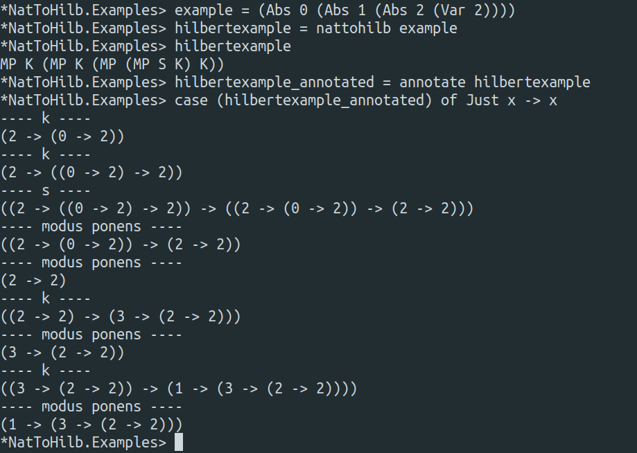
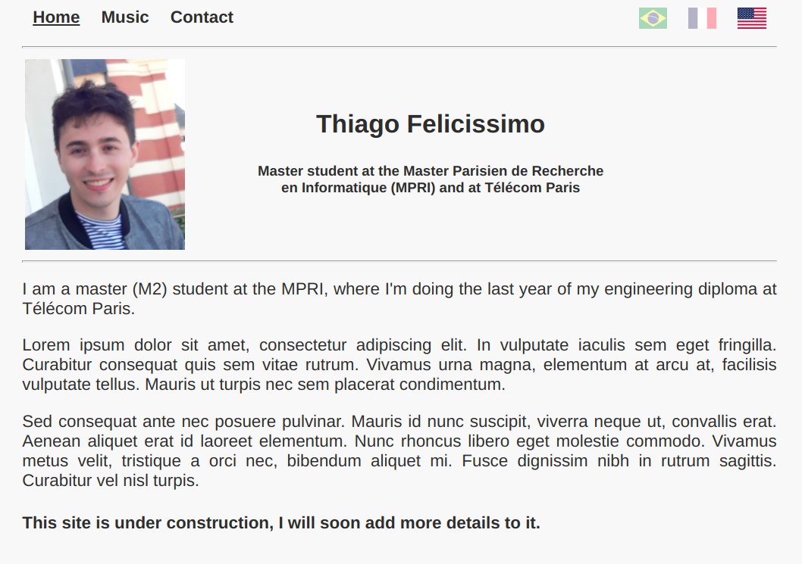
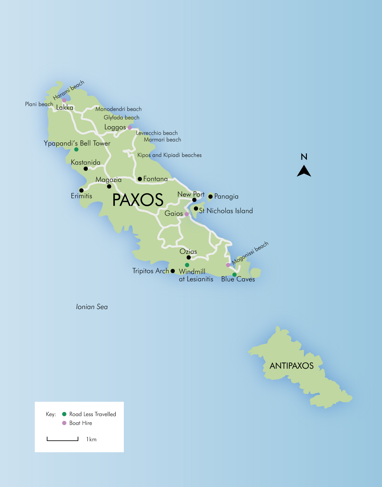
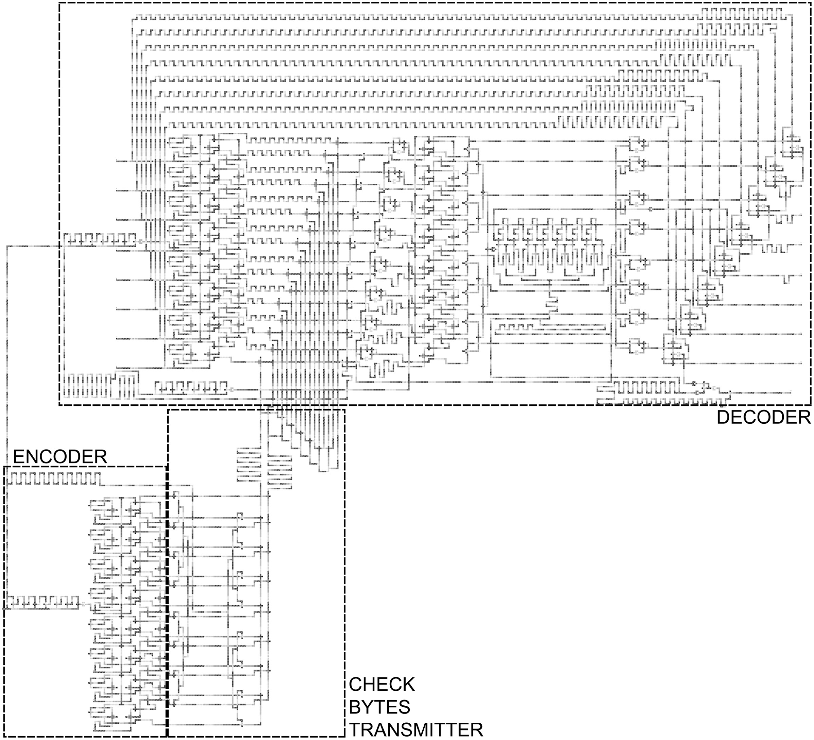
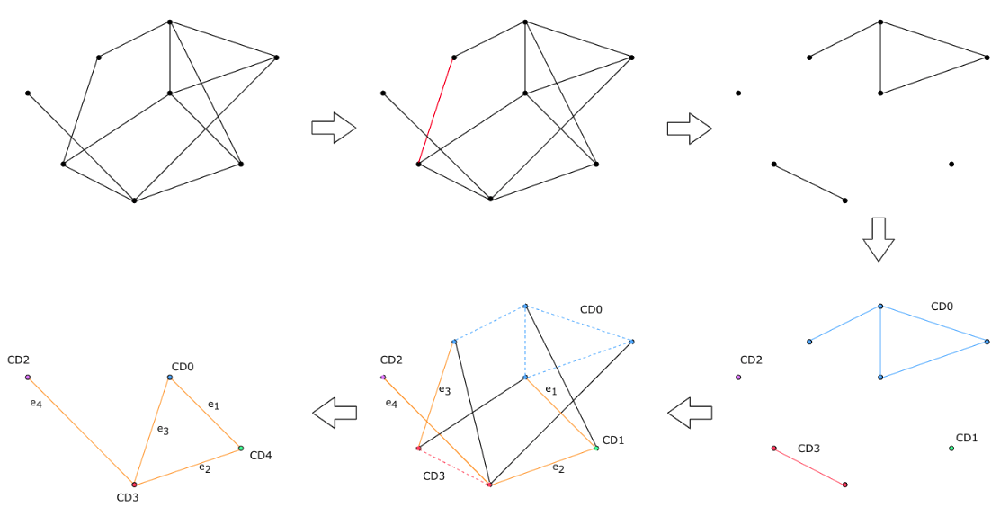
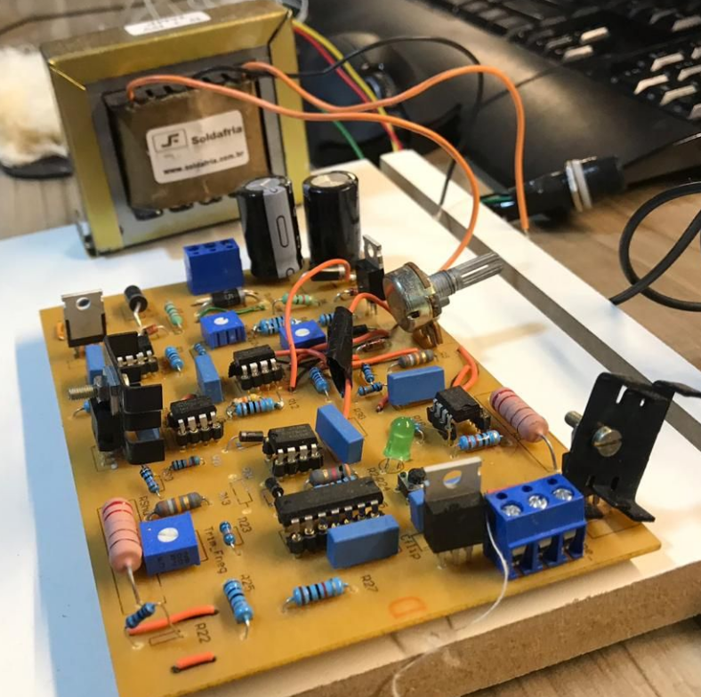
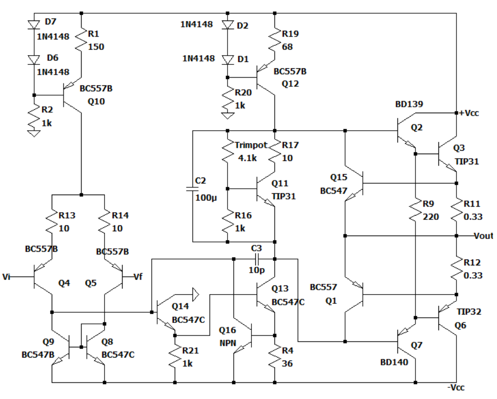

A Natural Deduction to Hilbert System Proof Translator, with Type InferenceThis is a translator from the natural deduction proof system to the hilbert proof system, and it concerns the intuitionistic propositional logic. It comes also with a type inference algorithm for proofs of tautologies in the hilbert system (that is, for closed proof terms), which given a proof term returns the most general form of the proposition it proves, if any. By the Curry-Howard Isomorphism, this is also a translator from the simply typed lambda calculus with sums, products and empty type to the SKI calculus with constructors and eliminators for sum, product and empty type. |
Simple Personal Website GeneratorThis is a small website generator I wrote to make it easier for me to manage this website. It is not very customizable, as it was made using my own personal template in mind, but it serves well the purpose of being a simple solution to automatize some of the boring and mechanical tasks linked to adding and editing the pages, specially when doing so for a multi-language website. |
Paxos's Synoid in the Akka frameworkThe problem of consensus is fundamental in real-world systems, as it is the basis of many distributed systems and blockchain algorithms. The Synoid Algorithm is an obstruction free algorithm that solves consensus on the message passing model. Its main use is implementing state-machine replication through the Paxos algorithm. The Paxos algorithm was created by Leslie Lamport and it has a very interesting history, which he describes here. Lamport presented the algorithm throught a fictious story about it being used by the legislative system of the Paxos island in ancient Greece. However, because the scientific community didn't understand his sense of humor at that time, the algorithm was ignored and its paper rejected. It took eight years until his paper was finally published, and nowadays Paxos is one of the most know consensus algorithms. In this project, which I done with João André Pestre for the SLR210 course on blockchains at Télécom Paris, we implement the Synoid Algorithm using the Akka framework in Java. We run some tests, for which we present the results and a discussion of them. |
Correcting byte errors in Quantum-dot Cellular AutomataDuring a part of the years of 2017 and 2018 I had the opportunity to do my first undergraduate research project, at the Computer Engineering Laboratory (LECOM) of the Computer Science Department of the UFMG, under the supervision of professors Luiz Vieira, Marcos Vieira and Omar Neto. I had the chance to be involved in various projects at the laboratory, which gave me an interesting insight in areas of computer science I did not know. I first worked with a project related to IoT, which involved programming with a MSP430 microcontroller. However, the project in which I spent most of my time was related to Quantum-dot Cellular Automata (QCA), a technology currently being developed to replace VLSI circuits by providing much faster clock speeds while consuming much less power. More precisely, my theme focused on the development of a circuit for correcting byte errors in QCA, which I presented in an article published at the Journal Nano Communication Networks. |
Graph algorithms implemented in CDuring the courses Algorithms 1 (at UFMG during 2019/1) and MITRO209 (at Télécom Paris during 2019/2 - 2020/1) I had the opportunity to implement various graph algorithms in C. These were |
Project of an ajdustable voltage sourceProject of an ajdustable voltage source for the course Electronic Circuits Lab 1 (at UFMG during 2018/2). Project report |
Project of an audio amplifierProject of an audio amplifier for the course Electronic Circuits Lab 2 (at UFMG during 2019/1). Project report |